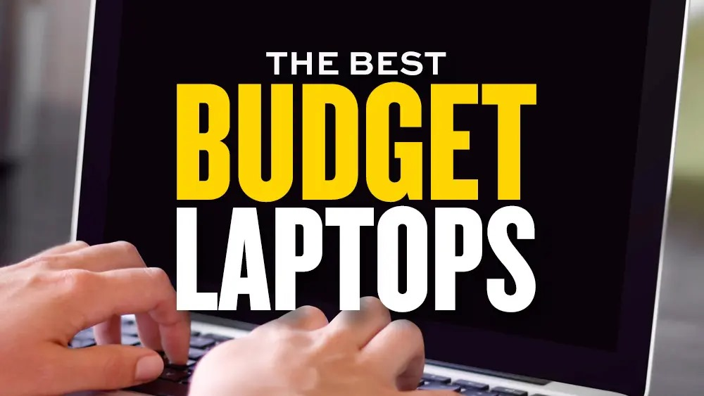
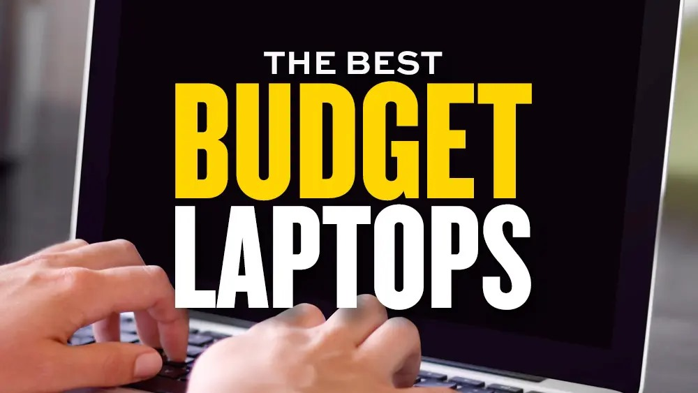
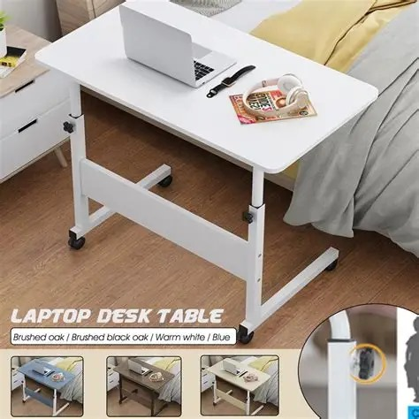
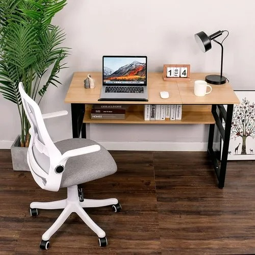
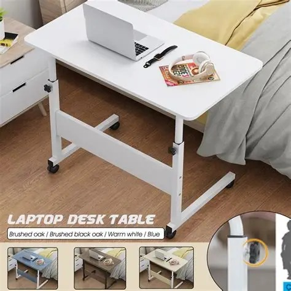
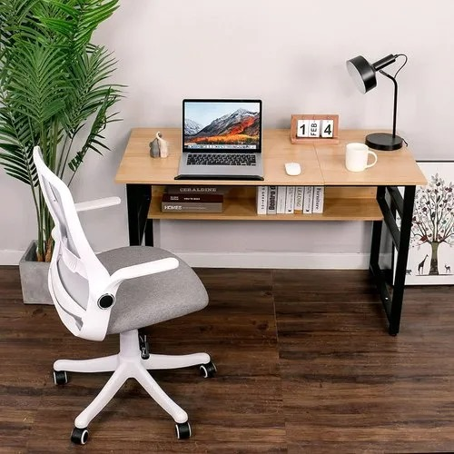
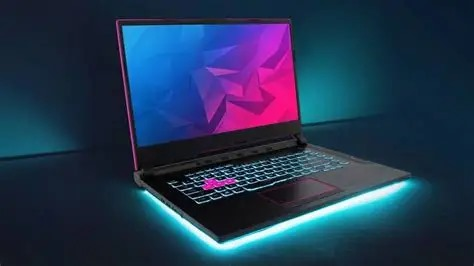
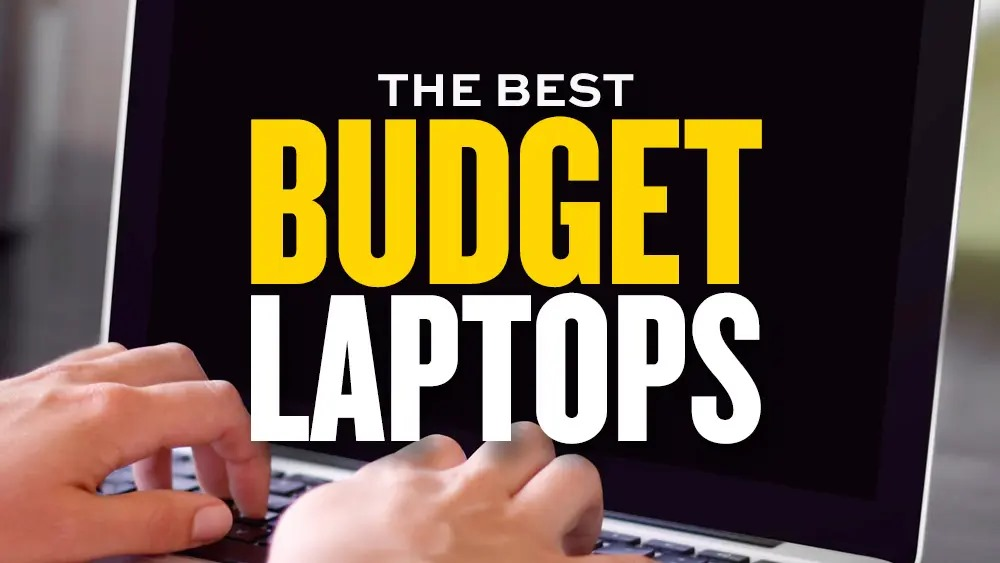
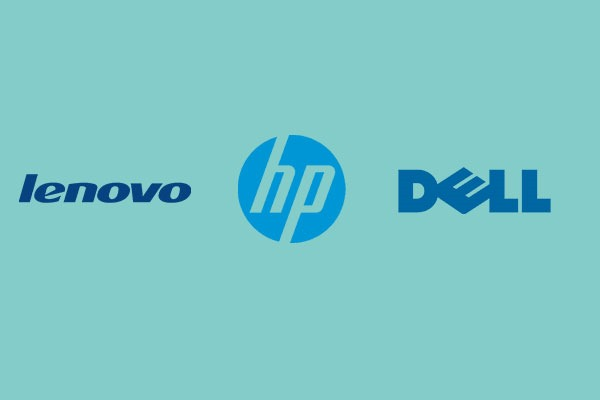

This blog is all about laptops. Here you’ll find honest reviews, buying guides, and the latest updates on laptops — from budget-friendly devices to high-performance machines. My goal is to help you choose the right laptop for your
 



Explore powerful gaming laptops with latest graphics and processors.


*5 Things to Check Before Buying a Laptop*
>
Every laptop brand has its strengths and weaknesses. Some are known for durability, others for performance, and some for stylish design. In this blog, we compare top brands like HP, Dell, Lenovo, and Apple. This will help you choose the brand that matches your needs and budget.

Is your laptop running slow? Don’t worry, you don’t always need to buy a new one. In this blog, you’ll learn simple but powerful tricks to boost speed and performance. These steps are easy to follow and can make your laptop feel almost new again.
I share insights and reviews about laptops to make your tech decisions easier. [Learn More → About Page]